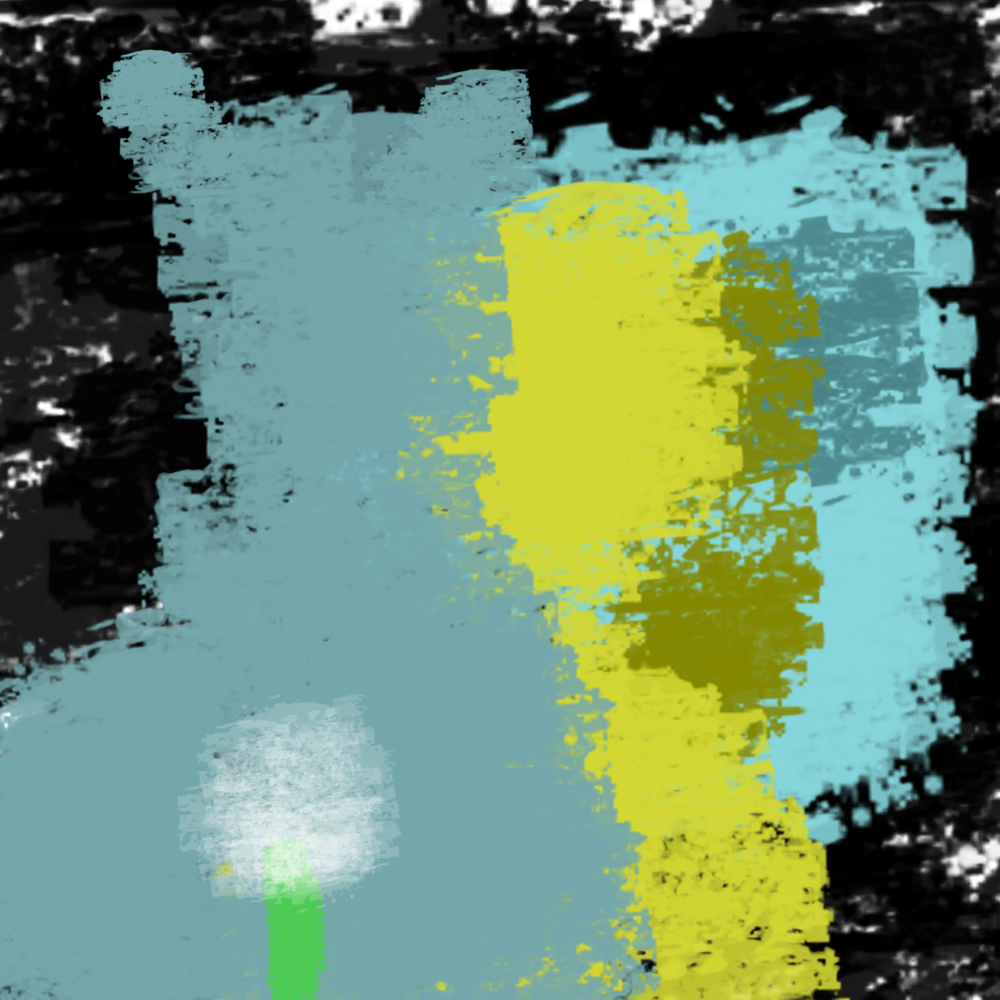

*The man opens his coat, and zombies run towards you. The white demon suddenly appears, emtis lightning from his hand, and burns the zombies to a crisp. You walk away, but stop for a second. Your eye is caught by a fluffy flower. You remember its name.
It is a dandelion. At your first encounter, it was billowing in the breeze, lost and misguided, not fully blossomed. Now, it is at its fullest potential, alive and planted to the floor, ready for the wind to take it on. Your heart still races
from day to day. It feels like you never left the hospital. You suddenly hear a vibrating noise, followed by a loud, obnoxious alarm. You wake up* That was.. That was insane! *You breathe heavily, recovering from your nightmare. You get up, go
to the bathroom and wash your face. The blue demon can be seen behind you.*